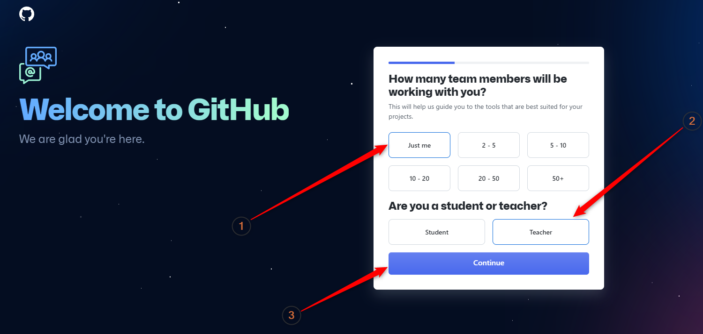

Внимание, спойлеры! Или говоря правильным языком — важное предупреждение:
ДО КОНЦА ЭТОГО УПРАЖНЕНИЯ GITHUB ПРОДОЛЖИТ РЕШАТЬ СВОИ ВОПРОСЫ!
но
ЭТИ ВОПРОСЫ ВАС УЖЕ НЕ СИЛЬНО ДОЛЖНЫ БЕСПОКОИТЬ!
потому что
ОНИ НА ВАС И ВАШ АККАУНТ НИКАК НЕ ПОВЛИЯЮТ
либо
ВЫ СМОЖЕТЕ ВЕРНУТЬСЯ К НИМ В ЛЮБОЙ МОМЕНТ!
поэтому:
РАССЛАБЬТЕСЬ И ПОЛУЧАЙТЕ УДОВОЛЬСТВИЕ 
но главное:
НИЧЕГО НЕ ПОКУПАЙТЕ!
по крайней мере, пока
Ну а теперь можно в спокойном состоянии духа внимательнее посмотреть,
что же там за вопросы спрашивает у нас GitHub:

GitHub объясняет этот вопрос тем, что сможет подобрать для вас утилиты, которые лучше всего подойдут вашему проекту.
Ну и, скорее всего, это нужно GitHub-у для его внутренней статистики, составления рейтигов в конце года и так далее.
Я не могу решать за вас, но еще раз повторю:
- Если вы впервые регистрируетесь на GitHub
- Если вы проходите это упражнение
- И если вы вообще на этом сайте...
Значит вы:
Новичок, который только входит в IT!
Поэтому для вас, единственно правильным ответом будет — Just me
.
Если вам будет интересно, то даже я — прошаренный Jav-ист с многолетним опытом (табличка Сарказм
),
при регистрации своего аккаунта, тоже выбрал Just me
При этом, конечно, если вы — супер-it-бизнесмен, с уже устоявшейся командой,
который регистрирует аккаунт для стартапа, который изменит мир, то вы должны выбрать то количество человек,
которое реально есть в вашей команде.
Но тогда, все равно, у меня к вам вопрос:
Схрена ли ты вообще делаешь это упражнение?!
В общем, для всех простых людей, ответ Just me
и смотрим вопросы дальше.
Он хочет узнать, кто вы — студент или учитель?
Почему меня испугал этот вопрос? Во-первых, потому что в нем отсутствуют такие важные варианты ответов, как
- Бизнесмен
- OpeSource-р
- Мошенник и так далее...
А, во-вторых, потому что, может быть я слишком часто кричу везде, что я — УЧИТЕЛЬ
,
и поэтому GitHub задал мне такой вопрос.
В общем, если GitHub вам такой вопрос не задаст, то и ладушки.
А если задаст, подумайте внимательно, кто вы — ученик или учитель?
После чего выберите свой вариант и жмите кнопку Continue.